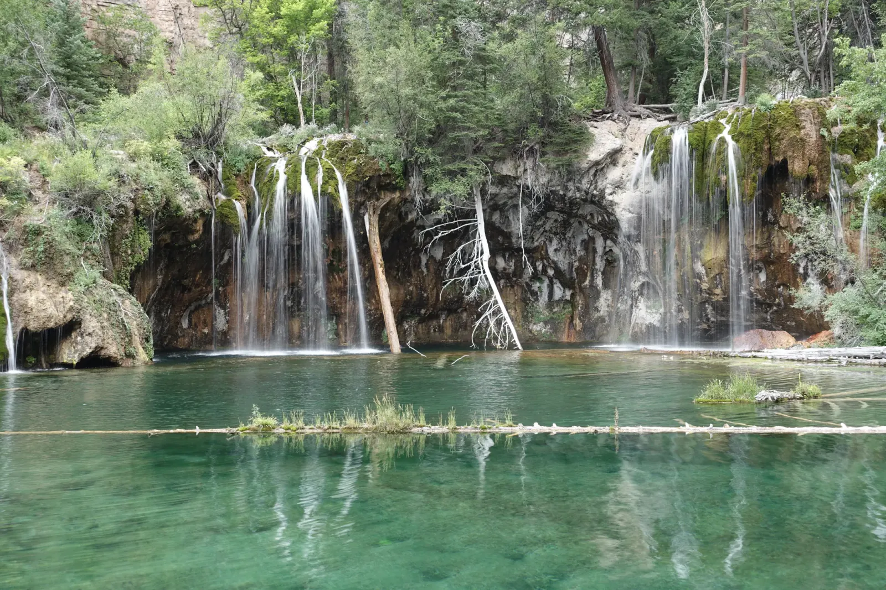

Seasons Apart
I walked through Roxborough State Park in late April under a deep blue sky, and the snow was fresh and heavy. It weighed down the scrub oak and capped the fence rails, and it had piled onto the roof of an old stone farmhouse. Red rock against white is a hard combination to beat. The sandstone here began some 300 million years ago as sand and gravel washed down from an older, long-vanished mountain range. When the modern Rockies rose, those layers were tipped onto their edges, and now they stand in rows like the dorsal fins of a school of sharks, each one outlined in white. If you're headed to the foothills in spring, pack for winter. March and April are some of the snowiest months on the Front Range.
By August the white had given way to teal. Hanging Lake sits in a side canyon off Glenwood Canyon, high above the Colorado River. The only way to see it is on foot, up a steep, rocky mile or so. At the top is a turquoise pool so clear that the fallen logs on the bottom look like they're sitting in a display case, with waterfalls spilling over mossy ledges at the far end. The color comes from dissolved limestone. Swimming isn't allowed, which is fair for a lake this fragile, so the main activity is staring. A little farther up the trail, Spouting Rock, I think, sends a creek pouring out of the cliff, and on the way back down I couldn't resist slowing the shutter on the cascades.


The rock at both places is hundreds of millions of years old. That's a lot of Aprils and Augusts, and I only got one of each. Red, white and teal. Not quite the flag, but close enough for me!